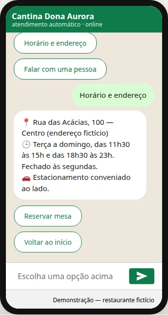

Produto
Atendimento automático no WhatsApp e nas redes
O cliente chama às 2 da manhã e já recebe resposta. Um atendente automático no WhatsApp, Instagram, Messenger e Telegram que responde, marca horário e anota pedido enquanto a sua equipe descansa.
Chamar no WhatsAppVer o que ele faz

O que ele faz
- Responde na hora, até de madrugada
- Atende no WhatsApp, Instagram, Messenger e Telegram
- Mostra cardápio, serviços e horário
- Marca horário e reserva
- Lembra o cliente antes
- Recebe pedidos
- Pede avaliação no Google
- Passa para uma pessoa quando precisa
- Sua equipe responde junto, num só lugar
- Avisa a equipe e anota na planilha
Monte o atendimento do seu jeito
Comece pelo que mais toma tempo hoje e acrescente o resto quando quiser.
- Atendente com menuHorário, endereço e serviços respondidos na hora.
- Reservas e agendamentosO cliente escolhe o horário livre e recebe lembrete antes.
- Pedidos pela conversaO pedido chega montado, com total, na cozinha ou na planilha.
- Atendente com IATira dúvidas com as informações do seu negócio.
- Avaliação no GoogleDepois da visita, o cliente recebe o link para avaliar.
- Resgate de faltasQuem faltou recebe um convite para remarcar.
Como funciona
- Você conta como atende hoje.
- Montamos o atendimento nos canais que você usa, com o WhatsApp oficial do seu número.
- Ligamos, acompanhamos e ajustamos todo mês.
Perguntas frequentes
Meu número pode ser bloqueado por usar robô?
Não. Usamos a API oficial do WhatsApp, feita pela Meta para empresas. Não usamos programas que imitam o WhatsApp Web, que são os que levam número a ser bloqueado.
O número e as conversas continuam meus?
Sim. A conta do WhatsApp fica no nome do seu negócio, com o seu número. Se um dia você parar, leva tudo com você.
O WhatsApp cobra alguma coisa?
Responder quem te chamou é grátis até 1.000 respostas por mês. Lembretes e promoções têm uma taxa pequena por mensagem, cobrada pela Meta direto no cartão do seu negócio.
E quando o cliente quer falar com uma pessoa?
Ele toca em "Falar com uma pessoa" e a conversa passa para a sua equipe, que recebe um aviso na hora.
Funciona no Instagram, no Messenger e no Telegram também?
Funciona. O mesmo atendimento responde no WhatsApp, na direct do Instagram, no Messenger do Facebook e no Telegram, e as conversas chegam num só lugar para a sua equipe.
Serve para o meu negócio, pequeno ou grande?
Serve do autônomo que atende sozinho à empresa com vários atendentes: o robô resolve o que se repete e passa a conversa para a pessoa certa da equipe. Restaurante, clínica, loja, escritório, indústria: conta como você atende hoje e a gente monta do seu jeito.